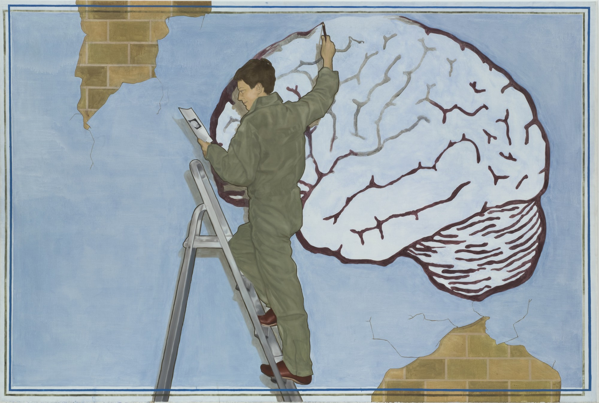
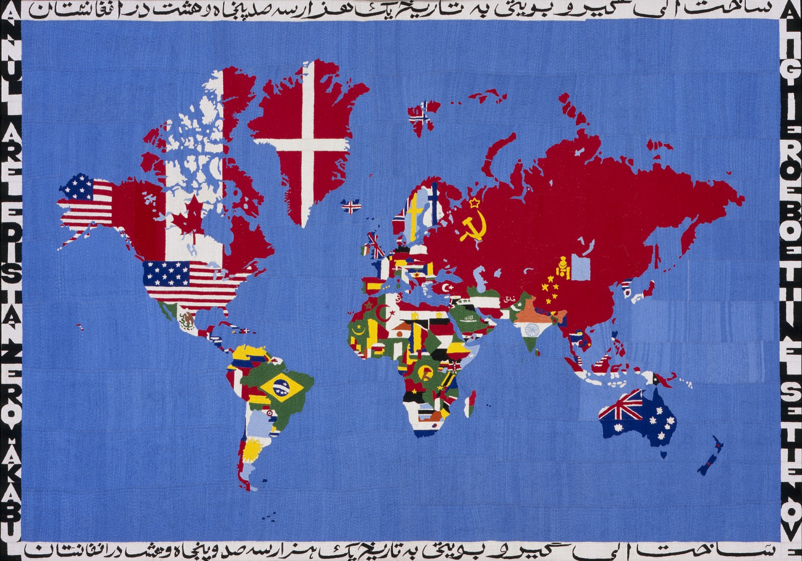
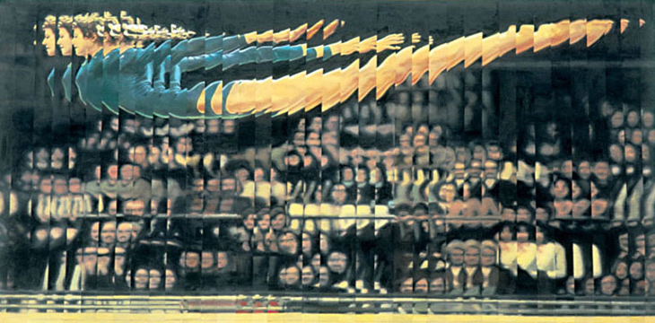

By partnering with brands & companies, we aim to make contemporary art more accessible and more widely shared around the world, while:
-
Getting you closer to your targeted audience
-
Enhancing your visibility
-
Elevating your brand
-
Develop an increasingly more creativework environment, leading to a more motivated staff
-
Shedding a newlight on your positioning

OUR
OUR
SERVICES
To create awareness to the company’s endeavour, our services include but are not limited to:
-
Implementing an art program: exhibition or events with emerging to established artists
-
Intermediating sponsorships to support the project
-
Providing advisory services to building an art collection.
We propose solutions that span across all media to adapt to the sites & budgets, such as murals, paintings, sculpture, photography, to more contemporary and/or technological like digital art, installations, video, light installations, performance.

OUR
OUR
WORLD
Our vast network of artists, brands and curators extends itself across:
-
UK
-
France
-
Switzerland
-
Portugal
-
Brazil
-
Australia
-
Belgium
-
Mexico

ABOUT
ABOUT
US
Established in 2021, Greenwich Cultural Services was born from a desire to bring art and artists to a wider audience. We believe that culture is paramount to civilisation and that visual art is one of the most important modes of expression available to us.
Our mission is to support living artists as a way of preserving cultural capital for future generations. We forge relationships between companies and contemporary artists to create brand awareness and credibility, while ensuring ongoing support for the visual arts and opening new spaces for creative partnerships.
GCS was created by Rita Almeida Freitas and Marisa Bellani, two contemporary art professionals who saw the need to respond to social and environmental issues through art. With this objective at the core of the company, we commit to proposing a diverse range of sustainable solutions and to working with companies with the same goals.
Our founders Rita and Marisa are professionals from the art industry with 20 years of combined experience.
Highly knowledgeable in contemporary art and well equipped to navigate the market, we provide easy access to a global network of artists, galleries and curators.
Marisa
Bellani
Marisa is the founder and creative director of Roman Road, a contemporary art gallery in London. The gallery has recently redefined itself with a more fluid and ethical approach, becoming a platform for collaborative exhibitions in 2019. Since 2020, Marisa has organised art residencies in London. She has been running the company since 2013, following and fostering notable projects and dealing with artists all over the world. Roman Road has established a qualitative and thematic programme and realised the creation of a research cell and Roman Road Journal in 2018, an online platform dedicated to publishing articles and exploring topics on art, science, technology, anthropology and literature. Marisa has completed two master degree courses, first at the Institut d’Études Supérieures des Arts and subsequently at Sotheby’s Institute of Art. She has held a seat and became the youngest member of one of the Tate’s Acquisition Committees and regularly participates in panel discussions and portfolio reviews, and gives talks at art universities.
Rita
Almeida
Freitas
Rita is a Lisbon-based art advisor working for a diverse range of clients worldwide. Before co-founding Imaginalis, Rita previously worked at Phillips de Pury (London) and Serralves Foundation, was a nominator for the FT Oppenheimer Funds Emerging Voices Award and has collaborated with ARCO art fair as a collector's liaison. Rita is also the co-founder of The SPOT: Sculpture Park and Outdoor Tendencies and a guest lecturer in the Art Market Post-Graduate program at Universidade Nova (Lisboa). Rita has completed her Business and Administration degree at the Católica Business School and her Masters at Sotheby’s Institute of Art (Art Business) and Christie’s Education (Post-war and Contemporary Art). The years spent in Paris, London and São Paulo allied to her extensive travels have provided her an excellent worldwide network, including private collectors, art dealers, curators and artists, therefore offering a privileged access to distinct art market sectors.
Contact us
To enquire about our services
and fees, please contact us!
hello@culturalservices.art